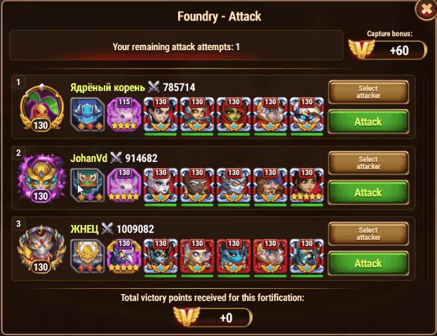

Guild Strategy Guide: Mastering Hero Battles via Combat Training (CT)
While Titan battles have straightforward counters and predictable stats, Hero battles carry far too many variables. Assigning targets based purely on a single visible defense team often leads to failed attacks and drops overall guild win rates.
For GW (Guild War) and CoW (Clash of Worlds), always test your Hero teams in Combat Training (CT) to ensure your counter strategy actually works.
1. Finding the Right Target
- Avoid Hard Counters: Skip targets with Hero compositions or individual units that your roster cannot reliably counter.
- Target Power Range: Look for targets within a reasonable power difference—ideally
-150K to +150K of your team's power.
2. Setting Up Combat Training (CT)
- GW: No direct CT shortcut exists. You must manually recreate the defense setup in the CT menu.
- CoW: Use the CT shortcut button on the target card to pre-load basic target settings automatically.
Required CT Configurations:
- Battle Mode: Match the active event (
GW or CoW).
- Defense: Change from
Current → Maximum.
- Attack: Leave at
Current (Default).
- Select Buffs:
- GW: Leave as
N/A.
- CoW: Buffs apply automatically based on the target zone.
- Patronage & Patterns: These do not auto-configure, so you must set them manually.
- Patronage: Apply standard/commonly used Hero-Pet assignments.
- Patterns (War Flags): Hover over the target's war flag prior to testing, then screenshot or memorize the stats to set them manually in CT.
3. Testing & Calculating Win Rates
- Start the CT battle and press
Esc → Skip Battle to get instant results.
- Click
Retry Battle multiple times to calculate your average success rate:
- Under 60% Unreliable / high risk.
- 60% – 79% Minimum acceptable threshold.
- 80%+ Safe to attack.
- If your win rate is low, click
Change attacker team and test a different comp.
Pro-Tip: Small adjustments matter! Fine-tuning your team pet and patronages can dramatically alter your win rate even with the same 5 heroes.
4. Testing Pure Matchups (Large Power Gaps)
If there is a wide power gap between you and your target, use CT solely to test composition counters rather than raw stats. In these cases, set Attack: Maximum to evaluate how the matchup behaves on an equal playing field.
5. [GIF Tutorial] Hero Wars CT Setup & Win Rate Test
